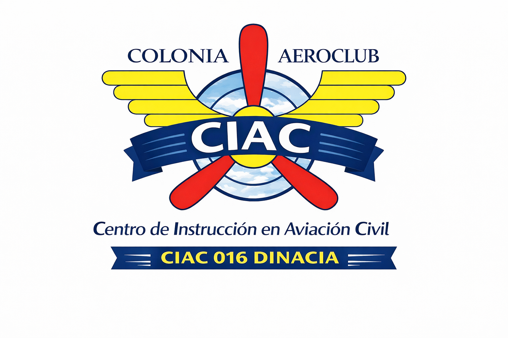
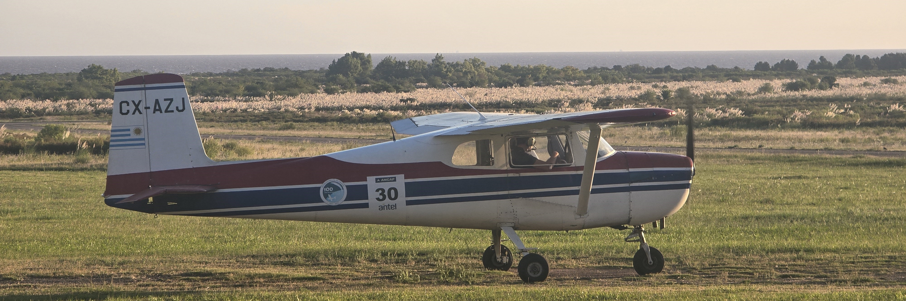

Desde 1941 formando pilotos.
CIAC 016 AVALADO POR DINACIA
El Centro de Instrucción de Aviación Civil (CIAC) del Colonia Aero Club es mucho más que una escuela de vuelo: es la puerta de entrada al apasionante mundo de la aviación.
Ubicado en el histórico Aeropuerto Internacional de Colonia “Laguna de los Patos”, nuestro CIAC combina tradición, experiencia y profesionalismo para formar a nuevas generaciones de pilotos en un entorno seguro, amigable y altamente motivador.
Desde hace décadas, el Colonia Aero Club cumple un rol fundamental en el desarrollo de la aviación civil uruguaya, formando pilotos que posteriormente continuaron sus carreras en líneas aéreas, empresas privadas e incluso en la Fuerza Aérea Uruguaya.
Hoy, adaptado a las nuevas exigencias de la normativa aeronáutica, el aeroclub cuenta con su propio Centro de Instrucción habilitado por la DINACIA como CIAC Nº 016, ofreciendo formación oficial y certificada para quienes sueñan con volar.
Aprender a pilotar un avión es una experiencia única. Es descubrir una nueva perspectiva del mundo, desarrollar disciplina, responsabilidad y confianza, y vivir emociones que pocas actividades pueden ofrecer.
Muchas personas creen que convertirse en piloto es algo lejano o inalcanzable, pero la realidad es que el primer paso está mucho más cerca de lo que imaginan.
Con tan solo 40 horas de vuelo ya podés obtener tu licencia de Piloto Privado, iniciando así un camino lleno de desafíos, aprendizaje y oportunidades. Nuestro curso está pensado tanto para quienes desean volar por pasión y recreación, como para aquellos que sueñan con desarrollar una carrera profesional en la aviación.
En el CIAC del Colonia Aero Club vas a encontrar instructores capacitados, un ambiente aeronáutico auténtico y el acompañamiento necesario durante todo el proceso de formación. Cada alumno avanza de forma progresiva, aprendiendo desde los fundamentos teóricos de la aviación hasta las maniobras prácticas de vuelo, navegación, comunicaciones y seguridad operacional.
Además de la formación técnica, el aeroclub brinda la posibilidad de integrarse a una institución con una enorme historia aeronáutica y un fuerte espíritu de camaradería. Aquí no solo se aprende a volar: también se comparten experiencias, conocimientos y la pasión por la aviación junto a otras personas que sienten la misma fascinación por el cielo.
La aviación civil continúa creciendo y generando nuevas oportunidades en Uruguay y el mundo. Ser piloto abre puertas a múltiples experiencias personales y profesionales, permitiendo desarrollar habilidades que acompañan para toda la vida. Incluso para quienes vuelan únicamente por hobby, la sensación de despegar, navegar y aterrizar una aeronave por sus propios medios es algo verdaderamente inolvidable.
Si alguna vez soñaste con pilotar un avión, este es el momento ideal para comenzar. No importa la edad ni la experiencia previa: lo más importante es tener ganas de aprender y animarse a dar el primer paso. En el Colonia Aero Club queremos ayudarte a convertir ese sueño en realidad.
Te invitamos a acercarte, conocer nuestras instalaciones, interiorizarte sobre los cursos y descubrir todo lo que la aviación tiene para ofrecerte. El cielo ya no tiene por qué ser un límite: puede ser el comienzo de una nueva aventura.
